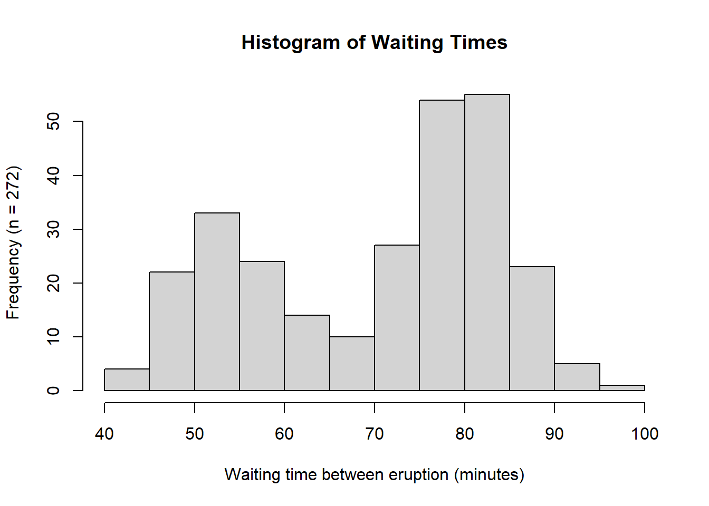

# Modified code from lab0_sample.R
# Set values
num_1 <- 10^4 # number of random draws
mu_1 <- 5 # mean of normal distribution to draw from
sigma_1 <- 2 # standard deviation of normal distribution
# Sample randomly from a normal distribution
x_1 <- rnorm(n = num_1, mean = mu_1, sd = sigma_1)
# Plot the results as a histogram
hist_1 <- hist(
x_1, # Vector for the histogram
main = "Adyan Rios", # Set title to my name
xlab = "Variable",
ylab = paste0("Frequency (n = ", sprintf("%.2e", num_1), ")"),
xaxt = "n" # Turn off x-axis values
)
# Add custom x-axis ticks
axis(side = 1, at = hist_1$breaks)
# Indicate mean
abline(v = mu_1, lwd = 2, col = "red")
# Indicate mean ± SD
abline(v = c(mu_1 + sigma_1, mu_1 - sigma_1),
lwd = c(2), lty = 2, col = "blue")
# Add a legend
legend("topleft", legend = c("Mean", "Mean ± SD"), lwd = 2,
col = c("red", "blue"), lty = c(1, 2), bty = "n")3 Assignment 3 - Normal distributions and the Galton board
EVR-5086 Fall 2025
Assignment 3 - Normal distributions and the Galton board
For this assignment follows the readings and exercises in “Risk Analysis in the Earth Sciences: A Lab Manual with Exercises in R” Version 3.
3.1 Exercise 1
In this exercise I modified the provided lab0_sample.R to produce a histogram based on 104 samples from a normal distribution with mean 5 and standard deviation 2 Figure 3.1. I then produced two histograms for the standard normal distribution which has a mean 0 and standard deviation 1. The first was based on 104 samples (Figure 3.2) and the second one included only 10 samples (Figure 3.3). In addition to the modifications outlined by the exercise, I included a legend on each plot, and I dynamically read sample size into the y-axis label. I organized my code using variable names that differed by the subscript (1-3) associated with each of the three respective histograms. A main difference between Figure 3.1 and the other two histograms is how the distribution is centered around the mean of 5 and has a wider range of values compared to Figure 3.2. These differences are driven by the differences in the respective means and standard deviations. Since the first two histograms have a large number of samples being drawn from the normal distribution function rnorm(), they resulting plots show the expected bell curve shape. However, since the third histogram (Figure 3.3) is based on only 10 samples, we do not see the definition of the bell curve at all. When only using 10 samples, the standard normal distribution results in a smaller range of values than it did with 104 samples. When the number of samples is large, there are more opportunities for values to be sampled. I explore the related probability density in the next part of this exercise.
In the final part of this first exercise, I plotted the formula for the normal distribution provided in EVR-5086 Assignment 3 (Figure 3.4). I noticed a small difference between the equation in the assignment and the one on Wikipedia, which I included in the same plot as a second curve in blue. Overall, exploring these formulas helped me better understand how normal distribution’s characteristic symmetric bell curve shape is driven in its formula by e-x2. As shown in the examples in Figure 3.4 larger the value in the exponential term of the natural log, the wider the distribution. In this exercise I do not need to use the full formula that is on Wikipedia because, when mean is 0 and the standard deviation is 1, some constant multipliers simplify to 1. In the R code, I used text() and expression() to include color-coded mathematical expressions in the top-left corner of the plot.
3.1.1 Modify code from lab0_sample.R
3.1.2 The Standard normal distribution
# Set values
num_2 <- 10^4 # number of random draws
mu_2 <- 0 # mean of normal distribution to draw from
sigma_2 <- 1 # standard deviation of normal distribution
# Sample randomly from a normal distribution
x_2 <- rnorm(n = num_2, mean = mu_2, sd = sigma_2)
# Plot the results as a histogram
hist_2 <- hist(
x_2, # Vector for the histogram
main = "The Standard normal distribution", # Set title
xlab = "Variable",
ylab = paste0("Frequency (n = ", sprintf("%.2e", num_2), ")"),
xaxt = "n" # Turn off x-axis values
)
# Add custom x-axis ticks
axis(side = 1, at = hist_2$breaks)
# Indicate mean
abline(v = mu_2, lwd = 2, col = "red")
# Indicate mean ± SD
abline(v = c(mu_2 + sigma_2, mu_2 - sigma_2),
lwd = c(2), lty = 2, col = "blue")
# Add a legend
legend("topleft", legend = c("Mean", "Mean ± SD"), lwd = 2,
col = c("red", "blue"), lty = c(1, 2), bty = "n")
3.1.3 The Standard normal distribution with only 10 samples
# Set values
num_3 <- 10 # number of random draws
mu_3 <- 0 # mean of normal distribution to draw from
sigma_3 <- 1 # standard deviation of normal distribution
# Sample randomly from a normal distribution
x_3 <- rnorm(n = num_3, mean = mu_3, sd = sigma_3)
# Plot the results as a histogram
hist_3 <- hist(
x_3, # Vector for the histogram
main = "The Standard normal distribution", # Set title
xlab = "Variable",
ylab = paste0("Frequency (n = ", sprintf("%.2e", num_3), ")"),
xaxt = "n" # Turn off x-axis values
)
# Add custom x-axis ticks
axis(side = 1, at = hist_3$breaks)
# Indicate mean
abline(v = mu_3, lwd = 2, col = "red")
# Indicate mean ± SD
abline(v = c(mu_3 + sigma_3, mu_3 - sigma_3),
lwd = c(2), lty = 2, col = "blue")
# Add a legend
legend("topleft", legend = c("Mean", "Mean ± SD"), lwd = 2,
col = c("red", "blue"), lty = c(1, 2), bty = "n")3.1.4 Plotting the normal distribution from Wikipedia
a <- seq(-3, 3, length.out = 100)
plot(a, 1 / (sqrt(2 * 3.14)) * exp(-(a^2)), col = "red", type = "o",
main = "Probability density function",
xlab = "Variable x", # Label x-axis
ylab = "f(x)") # Label x-axis
points(a, 1 / (sqrt(2 * 3.14)) * exp( -(a^2) / 2), col = "blue")
text(-2, 0.35, expression(f(x) == 1 / (sqrt(2 %*% 3.14)) * exp( -(x^2) / 2)),
col = "blue", cex = 0.6)
text(-2, 0.3, expression(f(x) == 1 / (sqrt(2 %*% 3.14)) * exp( -(x^2))),
col = "red", cex = 0.6)3.2 Exercise 2
In this part of the assignment, I plotted sea-level data and temperature rates of change over time. To save time when re-running the code, I added if statements that only download the data if they do not exist locally.
I ran into a couple early challenges. First, working with .txt files was a little challenging because I am used to .csv files, which usually already have descriptive column names and straightforward data frame structures. In trying a few options for how to read in the sea level data, I learned how to automatically ignore the comments beginning with “%” which streamline my code so I did not have to hard-code the lines to read. The next challenge was the way the time variable. I had not worked with decimal dates before, but I used date_decimal() from the lubridate to extract the dates into a format that was easier for me to interpret In reproducing and saving the three-panel plot (Atmospheric CO₂ (top), global mean surface-air temperature anomaly (middle), and global mean sea level anomaly (bottom)), I followed the code provided in lab1_sample.R. I then reproduced it in a multi-panel plot that renders directly in this document (Figure 3.5).
To answer how much atmospheric carbon dioxide concentrations, global mean temperatures, and sea levels changed between 1900 and the early part of the present century I subset each data set into “early” (1900-1910) and “recent” (2000-2010) and compared the mean values. The atmospheric carbon increased by 25.64 ppm (73%). Temperature and sea level both fluctuate between seasonally, but similar to the change seen for CO2, they also increased over those 100 years. The mean temperature increased by 0.93 degrees, and the mean sea level increased by 194 mm.
The last part of Exercise 2 involved calculating the rates of temperature change. I checked the data source to clarify why I was using column 14 and why the value was being divided by 100. I learned that the anomalies are stored as hundredths of a degree. Also, column 14 reflects information summarized across the 12 months, which are also provided in separate columns. Initially, I plotted the rate of change on the same axis as the original data series (Figure 3.6) using a red line for the rate and adding a legend. I also produced separate panels to more easily compare them (Figure 3.7). The results show that prior to 1970 there are fewer years with extreme increases or decreases. After the 1970, the dips and peaks are consistently more extreme in both direction. Although there are a few strong dips in the later half of the time series, summing over the values, indicated that the increases are more extreme overall. This corresponds with the upward trend observed in the global mean temperature anomaly plot, where the cyclical nature of the series is also evident.
3.2.1 Sea level anomaly data
# Check if libraries are installed; install if not.
if (!require("pacman")) install.packages("pacman")
pacman::p_load(here, lubridate, ggplot2)# Create a folder for storing downloaded files
if (!file.exists(here("assignment3/data"))) {
dir.create(here("assignment3/data"))
}
# Download and read in the sea level anomaly data from Jevrejeva et al. (2014)
if (!file.exists(here("assignment3/data/jevrejeva2014_gmsl.txt"))) {
download.file(
"https://psmsl.org/products/reconstructions/gslGPChange2014.txt",
here("assignment3/data/jevrejeva2014_gmsl.txt")
)
}
# Read in and ignore lines with comments (starting with %)
sl.data <- read.table(here("assignment3/data/jevrejeva2014_gmsl.txt"),
comment = "%")
# Assign column names
colnames(sl.data) <-
c("time", "rate_mm", "rate_err_mm", "gmsl_mm", "gmsl_err_mm")
# Format date
sl.data$date_decimal <- lubridate::date_decimal(sl.data$time)# Conditionally download files used in lab1_sample.R
if (!file.exists(here("assignment3/data/co2_mm_mlo.txt"))) {
download.file(
"ftp://aftp.cmdl.noaa.gov/products/trends/co2/co2_mm_mlo.txt",
here("assignment3/data/co2_mm_mlo.txt")
)
}
if (!file.exists(here("assignment3/data/law2006.txt"))) {
download.file(
"ftp://ftp.ncdc.noaa.gov/pub/data/paleo/icecore/antarctica/law/law2006.txt",
here("assignment3/data/law2006.txt")
)
}
if (!file.exists(here("assignment3/data/GLB.Ts+dSST.txt"))) {
download.file(
"http://data.giss.nasa.gov/gistemp/tabledata_v3/GLB.Ts+dSST.txt",
here("assignment3/data/GLB.Ts+dSST.txt")
)
}
# Read in the CO2 data
loa.co2.data <- read.table(here("assignment3/data/co2_mm_mlo.txt"),
skip = 57, header = FALSE)
law.co2.data <- read.table(here("assignment3/data/law2006.txt"),
skip = 183, nrows = 2004,
header = FALSE)
# Read in the GISS temperature data
begin.rows <- c(9, 31, 53, 75, 97, 119, 141)
num.rows <- c(19, 20, 20, 20, 20, 20, 14)
temp.data <- matrix(NA, nrow = sum(num.rows), ncol = 20)
temp.data[1: num.rows[1], ] <- as.matrix(
read.table("data/GLB.Ts+dSST.txt", skip = begin.rows[1],
nrows = num.rows[1], header = FALSE)
)
for (i in 2: length(begin.rows)) {
temp.data[(sum(num.rows[1: i- 1])+ 1): sum(num.rows[1: i]), ] <-
as.matrix(read.table("data/GLB.Ts+dSST.txt", skip = begin.rows[i],
nrows = num.rows[i], header = FALSE))
}# Create a folder to store figues as pdfs
if (!file.exists(here("assignment3/figures"))) {
dir.create(here("assignment3/figures"))
}
# Plot
pdf(here("assignment3/figures/lab1_sample_plot2.pdf"),
width = 4.5, height = 6)
par(mfrow = c(3, 1), cex = 0.66)
plot(law.co2.data[, 1], law.co2.data[, 6], type = "l", xlim = c(1900, 2020),
ylim = c(290, 400), bty = "n", xlab = "Time (yr)",
ylab = "Atmospheric carbon dioxide (ppm)")
lines(loa.co2.data[, 3], loa.co2.data[, 5], type = "l", col = "blue")
legend("topleft", c("Law Dome ice core record", "Mauna Loa measurements"),
col = c("black", "blue"), lwd = 1, bty = "n")
plot(temp.data[, 1], temp.data[, 14]/ 100, type = "l", xlim = c(1900, 2020),
ylim = c(-0.6, 0.7), bty = "n", xlab = "Time (yr)",
ylab = "Global mean temperature anomaly (K)")
plot(sl.data$time, sl.data$gmsl_mm , type = "l", xlim = c(1900, 2020),
ylim = c(-50, 200), bty = "l", xlab = "Time (yr)",
ylab = "Sea level anomoly (mm)")
# Close the device and make the return value invisible
invisible(dev.off())# Re run code to print in Quarto html and pdf
# CO2
plot(law.co2.data[, 1], law.co2.data[, 6],
type = "l", xlim = c(1900, 2020), ylim = c(290, 400),
bty = "n", xlab = "Time (yr)", ylab = "Atmospheric CO2 (ppm)")
lines(loa.co2.data[, 3], loa.co2.data[, 5], type = "l", col = "blue")
legend("topleft",
c("Law Dome ice core record", "Mauna Loa measurements"),
col = c("black", "blue"), lwd = 1, bty = "n")
# Temperature anomaly
plot(temp.data[, 1], temp.data[, 14] / 100,
type = "l", xlim = c(1900, 2020), ylim = c(-0.6, 0.7),
bty = "n", xlab = "Time (yr)",
ylab = "Global mean temperature anomaly (K)")
# Sea level anomaly
plot(sl.data$time, sl.data$gmsl_mm,
type = "l", xlim = c(1900, 2020), ylim = c(-50, 200),
bty = "n", xlab = "Time (yr)",
ylab = "Sea level anomaly (mm)")

3.2.2 lab1_sample.R Question 1
By how much have atmospheric carbon dioxide concentrations, global mean temperatures, and sea levels changed between 1900 and the early part of the present century?
# Create filtered subsets of each data set to calculate differences
early_co2 <- law.co2.data[law.co2.data$V1 >= 1900 & law.co2.data$V1 < 1910, ]
recent_co2 <- law.co2.data[law.co2.data$V1 >= 2000 & law.co2.data$V1 < 2010, ]
early_temp <- temp.data[temp.data[, 1] >= 1900 & temp.data[, 1] < 1910, ]
recent_temp <-temp.data[temp.data[, 1] >= 2000 & temp.data[, 1] < 2010, ]
early_sea <- sl.data[floor(sl.data$time) >= 1900 & floor(sl.data$time) < 1910, ]
recent_sea <- sl.data[floor(sl.data$time) >= 2000 & floor(sl.data$time) < 2010, ]
# Calculate percent changes (c) or percent differences (pc)
pc_co2 <- round((mean(recent_co2[, 6]) - mean(early_co2[, 6])) /
mean(early_co2[, 6]), 4)*100 #25.64 percent
c_co2 <- mean(recent_co2[, 6]) - mean(early_co2[, 6]) #73.2 percent
c_temp <- mean(recent_temp[, 14]/100) - mean(early_temp[, 14]/100) #0.93 degrees
c_sea <- mean(recent_sea$gmsl_mm) - mean(early_sea$gmsl_mm) #194 mm3.2.3 Rates of temperature change
# Rate of change
dT_dt_1 <- diff(temp.data[, 14])/100 / diff(temp.data[, 1])
midpoint_t <- temp.data[-length(temp.data[, 1]), 1] + .5
# GISS records sometimes use 100 to represent the average temperature
par(mar = c(5, 7, 4, 2) + 0.1)
plot(temp.data[, 1], temp.data[, 14] / 100, type = "l", xlim = c(1900, 2020),
ylim = c(-0.6, 0.9), bty = "n", xlab = "Time (yr)",
ylab = "Global mean temperature anomaly (K)
and annual rate of change", lwd = 1.5)
lines(midpoint_t, dT_dt_1, type = "l", col = "red", lwd = 1.5)
# Add a legend
legend("topleft",
legend = c("Global mean temperature anomaly (K)",
"Annual rate of temperature change"),
lwd = 1.5, col = c("black", "red"), lty = 1, bty = "n", cex = 0.8)
# Second y-axis for the rate
# plot(temp.data[, 1], temp.data[, 14] / 100,
# type = "l", xlim = c(1900, 2020),
# ylim = c(-0.6, 0.7), bty = "n", xlab = "Time (yr)",
# ylab = "Global mean temperature anomaly (K)", lwd = 1.5)
# par(new = TRUE) # Prepare for second axis
# plot(midpoint_t, dT_dt_1, type = "l",
# xlim = c(1900, 2020), ylim = c(-0.5, 0.5),
# col = "red", xaxt = "n", yaxt = "n", xlab = "", ylab = "", , lwd = 1.5)
# axis(side = 4, col = "red", col.axis = "red")
# mtext("Annual rate of change", side = 4, line = 3, col = "red")plot(temp.data[, 1], temp.data[, 14] / 100, type = "l", xlim = c(1900, 2020),
ylim = c(-0.6, 0.7), bty = "n", xlab = "Time (yr)",
ylab = "Global mean temperature anomaly (K)", lwd = 1.5)
plot(midpoint_t, dT_dt_1, type = "l", col = "red", lwd = 1.5,
xlim = c(1900, 2020),, ylim = c(-0.3, 0.3), bty = "n",
xlab = "Time (yr)", ylab = "Annual rate of change")3.3 Exercise 3
To prepare for this exercise, I included example code that was provided in the lab manual. I left it in because I reuse parts of it later, including the sampling examples to identify resulting “Galton Board” bins, and the code to generate histograms and Q-Q plots. For the actual exercise further down in this chapter, I created a function I could reuse for each variation across different number of balls. Using the function with intentional return vectors allowed me not to worry about clearing existing variables or figures from memory. I ran the function with 10 bins, and with 10, 20, 30, 100, and 10^4 balls. With 10 and 20 balls the histogram and Q-Q plot do not look normal. At about 30 balls the histogram and Q-Q plot begin to look approximately normal (Figure 4.3). Once the number of balls is large, as in the runs with 102 (Figure 4.4) and very large with 104 balls (Figure 4.5), the histogram looks normal but the Q-Q plot shows a slight departure. This may relate to the discrete and bounded nature of the bin outcomes, while the Q-Q plot may be better suited for continuous data.
3.3.1 Implement the Galton Board
# Check if libraries are installed; install if not.
if (!require("pacman")) install.packages("pacman")
pacman::p_load(animation)# Set number of balls and rows following the example code
n.balls <- 200
n.rows <- 15
# ani.options(nmax = n.balls + n.rows - 2)
# quincunx(balls = n.balls, layers = n.rows)# Follow example code to identify the resulting bin
path <- sample(x = c(-0.5, 0.5), size = (n.rows - 1), replace = TRUE)
print(path) [1] -0.5 0.5 0.5 0.5 0.5 0.5 0.5 0.5 0.5 0.5 -0.5 0.5 -0.5 0.5bin <- sum(path)
print(bin)[1] 4# Example of a for loop
n.times <- 3
for (i in 1:n.times) {
print(i)
}[1] 1
[1] 2
[1] 3# Another example of a for loop
n.times <- 5
output <- rep(1, n.times)
for(i in 3:n.times){
output[i] <- sum(output[(i-2):(i-1)])
}
print(output)[1] 1 1 2 3 5# Example of how to make the Q-Q plot
norm.vals <- rnorm(100, mean = 5, sd = 3)
qqnorm(norm.vals)
qqline(norm.vals)4 Exercise
- Use comments to explain what the code does and who wrote it
- Clears existing variables from memory and close open figures
- Set values for the number of balls to drop and the number of rows of pins
- Create vector output, initially populated with NAs
- Use a loop to run through values (1:n.balls), determine and store results
- Make a histogram of outputs
# Develop a function to conduct the exercise
run_board <- function(n_rows, n_balls){
output <- rep(NA, n_balls) # Create vector for output
for (i in 1: n_balls){ # Loop over given number of balls
path_i <- sample(x = c(-0.5, 0.5),size = (n_rows - 1), replace = TRUE)
output[i] <- sum(path_i) # Sum over samples to obtain bin
}
return(output)
}# Repeatedly run the function with different n_balls
run5 <- run_board(n_rows = 10, n_balls = 10)
hist(run5, main = "",
xlab = "Bin", ylab = "Frequency") # Create histogram
qqnorm(run5, main = "") # Create Q-Q plot
qqline(run5, col = "red", lwd = 2)# Repeatedly run the function with different n_balls
run5 <- run_board(n_rows = 10, n_balls = 20)
hist(run5, main = "",
xlab = "Bin", ylab = "Frequency") # Create histogram
qqnorm(run5, main = "") # Create Q-Q plot
qqline(run5, col = "red", lwd = 2)# Repeatedly run the function with different n_balls
run5 <- run_board(n_rows = 10, n_balls = 30)
hist(run5, main = "",
xlab = "Bin", ylab = "Frequency") # Create histogram
qqnorm(run5, main = "") # Create Q-Q plot
qqline(run5, col = "red", lwd = 2)# Repeatedly run the function with different n_balls
run5 <- run_board(n_rows = 10, n_balls = 10^2)
hist(run5, main = "",
xlab = "Bin", ylab = "Frequency") # Create histogram
qqnorm(run5, main = "") # Create Q-Q plot
qqline(run5, col = "red", lwd = 2)# Repeatedly run the function with different n_balls
run5 <- run_board(n_rows = 10, n_balls = 10^4)
hist(run5, main = "",
xlab = "Bin", ylab = "Frequency") # Create histogram
qqnorm(run5, main = "") # Create Q-Q plot
qqline(run5, col = "red", lwd = 2)4.1 Exercise 4
Based on the histograms and Q–Q plots, the waiting time between Old Faithful eruptions is not approximately normally distributed (Figure 4.5). The histogram is clearly bimodal, and the Q–Q plot shows systematic departures from the red reference line, indicating a lack of correspondence between the theoretical normal quantiles and the sample quantiles. By contrast, based on the shape of the histogram and the close alignment with the red line in the Q–Q plot in Figure 4.7, the sepal length data for Iris setosa appears to be approximately normally distributed.
4.1.1 Generate histograms and Q-Q plots
4.1.1.1 Old Faithful eruptions
# Histogram of waiting times
hist(faithful$waiting,
main = "Histogram of Waiting Times",
ylab = paste0("Frequency (n = ", length(faithful$waiting), ")"),
xlab = "Waiting time between eruption (minutes)")
# Q-Q plot of waiting times
qqnorm(faithful$waiting,
main = "Q-Q Plot of Waiting Times")
qqline(faithful$waiting, col = "red", lwd = 2)

4.1.1.2 Sepal length of setosa irises
# Histogram of waiting times
hist(iris3[, "Sepal L.", "Setosa"],
main = "Histogram of Sepal Length",
ylab = paste0("Frequency (n = ",
length(iris3[, "Sepal L.", "Setosa"]), ")"),
xlab = "Sepal length in cm")
# Q-Q plot of waiting times
qqnorm(iris3[, "Sepal L.", "Setosa"],
main = "Q-Q Plot of Sepal Length")
qqline(iris3[, "Sepal L.", "Setosa"], col = "red", lwd = 2)